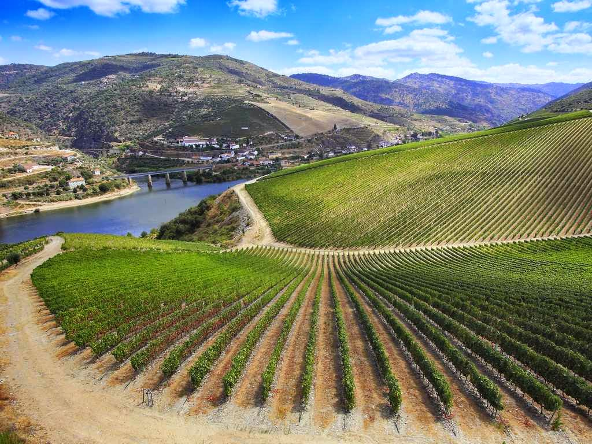
Escapade 4 jours
Ribera del Duero
Une histoire millénaire
Aranda de Duero · Peñafiel · Lerma
Vins d'exception · Patrimoine · Gastronomie · Villages castillans

vpdvoyages.com
🍷 L'ESPRIT DU VOYAGE
Plongez au cœur de la Ribera del Duero, l'une des régions viticoles les plus prestigieuses d'Espagne, avec Aranda de Duero comme point de départ.
- Découvrir des bodegas et déguster les vins rouges emblématiques de la région.
- Flâner dans des villes et villages historiques, de Lerma à Peñafiel.
- Explorer les caves souterraines d'Aranda et les paysages de vignobles.
- Savourer une cuisine castillane généreuse, notamment le lechazo et la morcilla.
🍷 Vins d'exception
🏛️ Patrimoine
🍽️ Gastronomie
🏘️ Villages castillans
📍 LOCALISATION
Un territoire viticole au cœur de l'Espagne
La Ribera del Duero s'étend autour du fleuve Duero, sur un vaste territoire viticole partagé entre plusieurs provinces.
📍 Point d'ancrage : Aranda de Duero
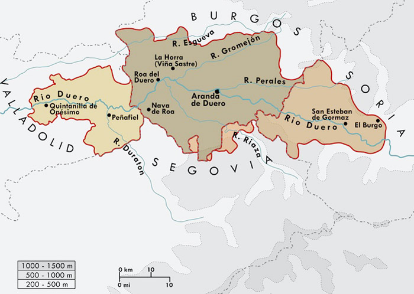
📅 PROGRAMME 4 jours
1
Jour 1 - Arrivée à LermaVisite de la cité ducale · Arrivée à Aranda en fin d'après-midi · Soirée libre
2
Jour 2 - Aranda & GormazVisite Vieille ville d'Aranda · Cave du 15ème siècle + dégustation · Forteresse Gormaz et/ou mosaïque de Baños · Dîner Restaurant typique
3
Jour 3 - Peñafiel & RiberaChâteau de Peñafiel · Bodegas Protos · Déjeuner au bord de l'eau · Circuit dans la Ribera · Tapeo rue Isilla
4
Jour 4 - Cidrerie basqueDépart d'Aranda en début de matinée · Cidrerie basque (Astigarraga)
🏛️ JOUR 1 Lerma
Arrivée, cité ducale et installation à Aranda de Duero
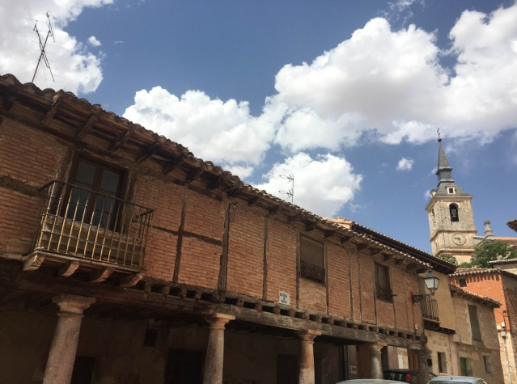
Lerma
Cette ville prend son essor au 17ème siècle sous l'impulsion du duc Francisco Gómez de Sandoval y Rojas. Son Palais Ducal domine la Plaza Mayor.
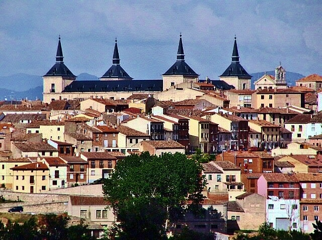
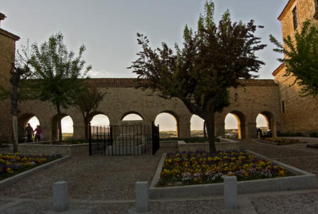
🍷 JOUR 2 Aranda & Gormaz
Aranda de Duero, une ville bâtie sur ses caves
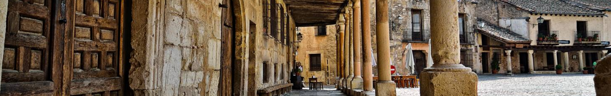
Aranda de Duero
Aranda possède un patrimoine architectural remarquable et un réseau de caves souterraines exceptionnel. Découverte d'une cave du 15ème siècle, suivie d'une dégustation théâtralisée de Ribera del Duero, fromages et jambons locaux.
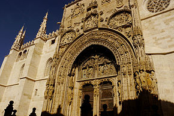
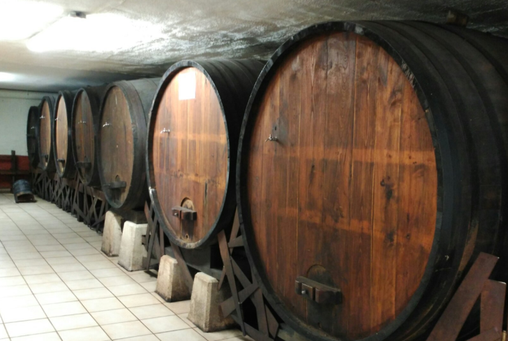
Gormaz
Construite vers l'an 756 par l'émir Abd ar-Rahman Ier de Cordoue, la forteresse de Gormaz s'étire sur environ 390 mètres et conserve encore 28 tours.
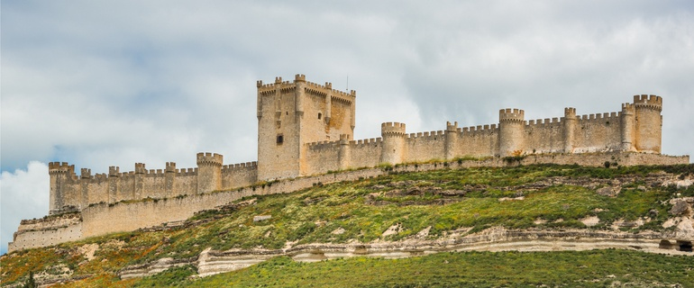
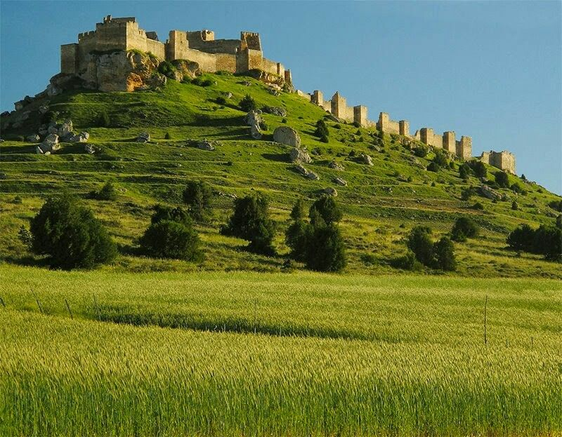
🏰 JOUR 3 Peñafiel & Ribera
Château, grands vins et circuit dans la Ribera
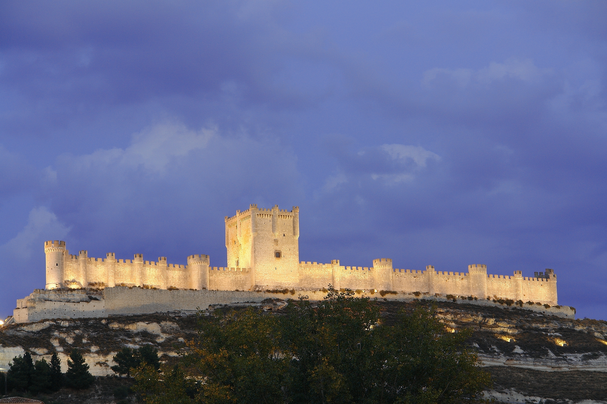
Château de Peñafiel
Dans les entrailles du château se trouve un labyrinthe de galeries où le vin de la Bodega Protos est entreposé et conservé. La Place du Coso accueille des festivités depuis 1443.
Le Tempranillo
Le cépage représente 90 % du vignoble. L'appellation produit des vins rouges dont le Tempranillo constitue au minimum 75 %. Pingus et Vega Sicilia portent haut les couleurs de l'appellation.
Circuits : Pesquera
Valbuena
Quintanilla
Roa
🍽️ GASTRONOMIE Castillane
Le goût du terroir, autour du four à bois
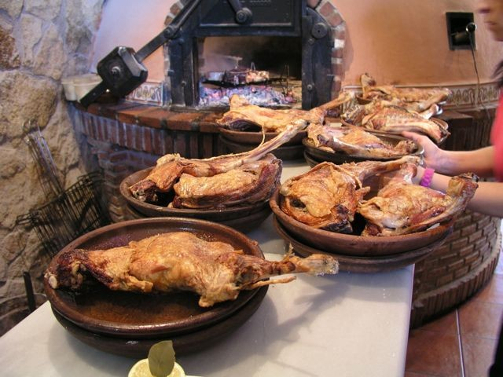
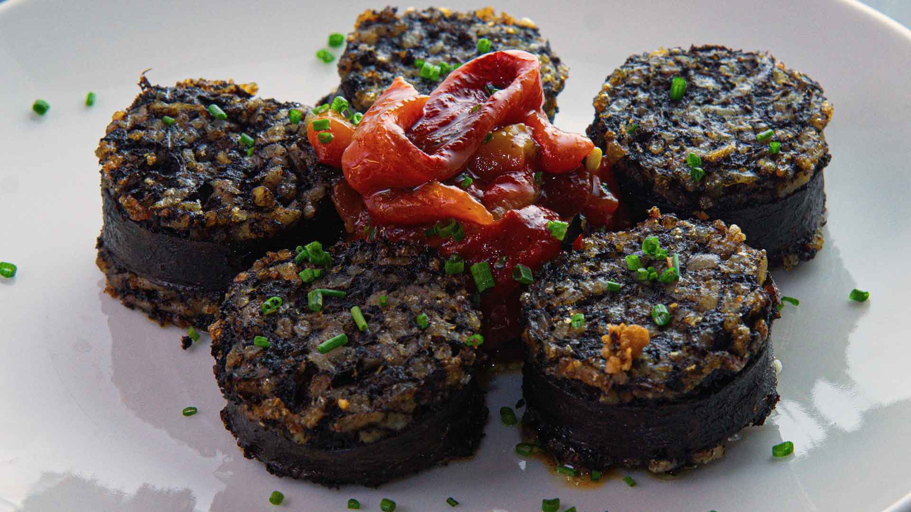
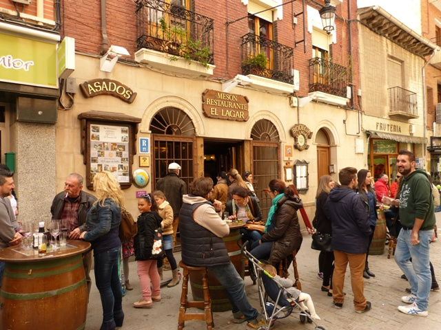
Lechazo
Morcilla
Tapeo rue Isilla
🍏 JOUR 4 Cidrerie basque
Une halte gourmande dans une cidrerie d'Astigarraga
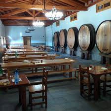
Sagardoa
Le cidre, ou sagardoa, appartient à l'histoire du Pays Basque. Cette dernière étape apporte une touche conviviale et authentique à l'escapade.
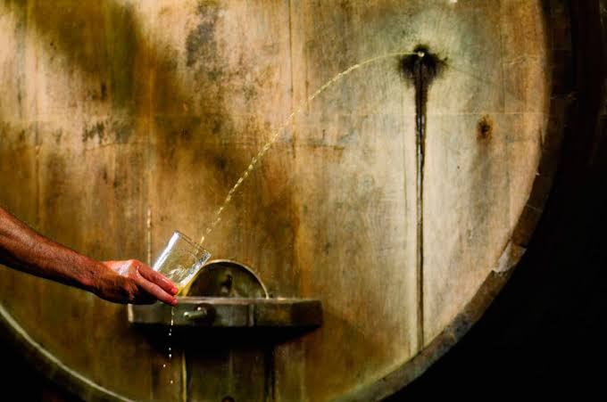
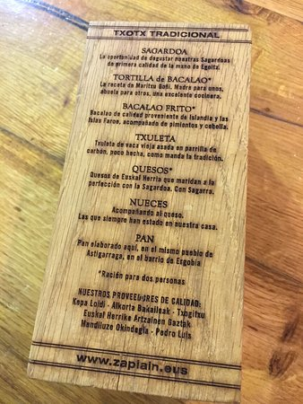
📋 VOTRE ESCAPADE 4 jours
Jour 1 Lerma · Cité ducale · Arrivée à Aranda
Jour 2 Aranda · Caves · Dégustation · Forteresse de Gormaz
Jour 3 Château de Peñafiel · Protos · Vignobles · Tapeo
Jour 4 Cidrerie basque (Astigarraga) · Dernière découverte
Une parenthèse entre grands vins, villages historiques, patrimoine médiéval et gastronomie généreuse.
ℹ️ INFORMATIONS PRATIQUES
Inclus
Hébergement en chambre double, pension complète (sauf un dîner), visites et dégustations mentionnées.
Conseils
- Réserver les bodegas à l'avance
- Prévoir des chaussures confortables
- Goûter le lechazo et la morcilla
- Ne pas manquer la dégustation de Tempranillo
Photos : dossier images/ · Ribera del Duero